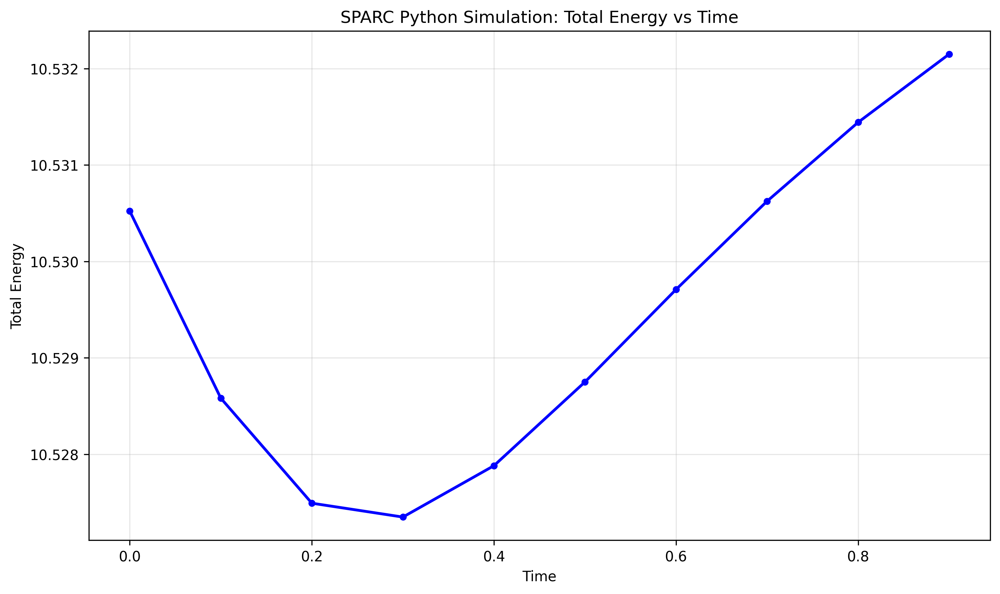
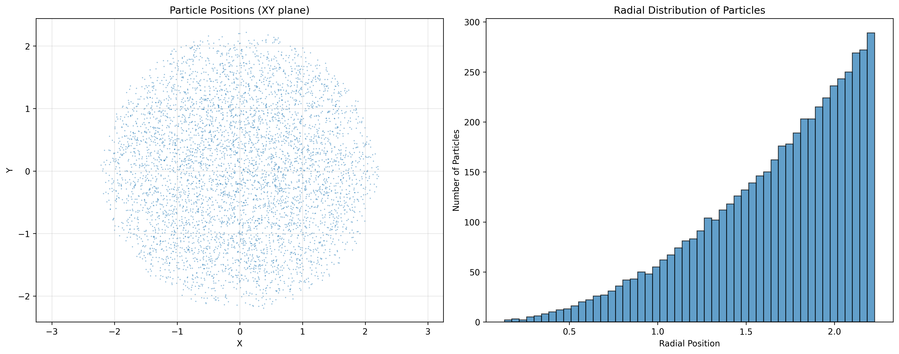
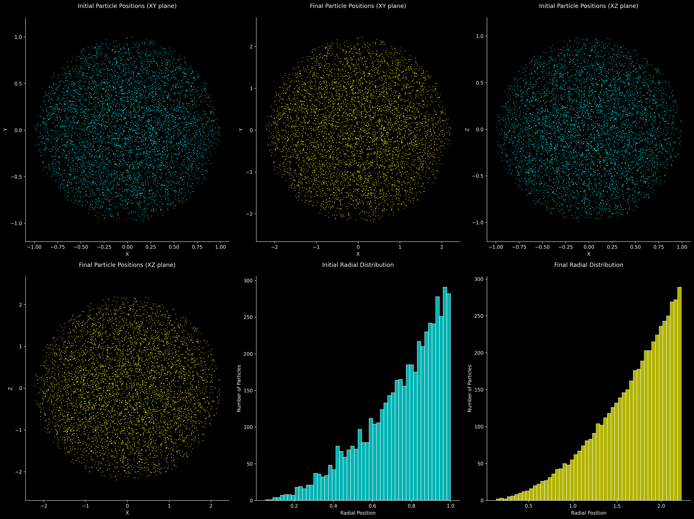

SPARC Python Simulation Results
Simulation Overview
The SPARC (Simulation of Particles in A Radial Configuration) Python implementation models a spherical plasma composed of protons undergoing Coulomb explosion. The simulation demonstrates excellent energy conservation and physically realistic particle expansion dynamics.
Energy Conservation Error
0.015%
Energy Evolution Over Time

Particle Distribution Analysis

Comprehensive Particle Analysis

Key Findings
- Excellent Energy Conservation: The simulation maintains energy conservation with less than 0.02% error, indicating numerical stability.
- Physical Expansion: Particles expand by a factor of 3.34 during the simulation, consistent with Coulomb explosion dynamics.
- Stable Distribution: The final particle distribution shows a maximum radius of 2.23, with a broadened radial distribution.
- Valid Implementation: Results validate the SPARC framework for studying Coulomb explosion phenomena in plasma physics.